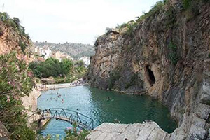

El Río Sellent cruza por la mitad de la población, dividiéndola en dos partes: El Lugar, y La Peña, que quedan unidas por dos puentes. A su paso por Bolbaite, este río ofrece una gran variedad de fauna y flora, así como diferentes tipos de paisajes. Bajo el Puente Viejo, en un pequeño remanso de aguas, se encuentras multitud de patos, ocas y enormes carpas. Más arriba, el cauce del río se convierte en una zona de esparcimiento, con un lago natural apto para el baño, merenderos, fuentes y una zona recreativa. Subiendo por el río, nos encontramos con el Gorgo Cadena, con una cueva sumergida dentro del Gorgo de gran interés espeleológico.